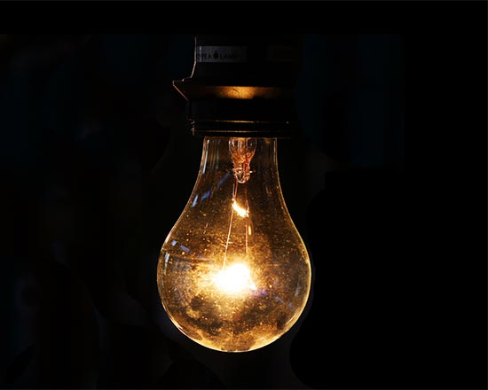

<!DOCTYPE html>
<html lang="en-ca">
<head>
  <meta charset="utf-8">
  <title>Lightbulb Emporium</title>
</head>
<body>


</body>
</html>

<header>
  <main>
   <h1>Lightbulb Emporium</h1>

    <nav>
      <ul>
        <li><a href="s">Standard</a></li>
        <li><a href="s">Micro LED</a></li>
        <li><a href="s">Light Chains</a></li>
      </ul>
   </nav>

 <p>Lightbulbs are difficult to match—we make it easy.</p>


    <figure>
      
      <figcaption>This style adds an air of classicism.</figcaption>
    </figure>

    <h2>Incandescent</h2>

   <ul>

    <li>Energy use: Lots</li>
    <li>Colour: Very warm</li>
    <li>Sizes: Small to large</li>

  </ul>

  [Add to wish list] [Add to cart]


   <figure>
      
      <figcaption>Adds a warm, natural glow to any room.</figcaption>
   </figure>

   <h2>Incandescent</h2>

  <ul>
    <li>Energy use: Moderate</li>
    <li>Colour: Warm</li>
    <li>Sizes: Small to long</li>
  </ul>
  [Add to wish list] [Add to cart]

    <figure>
      
      <figcaption>Adds a modern cool feel to dark spaces.</figcaption>
    </figure>

    <h2>Compact Florescent</h2>

  <ul>
   <li>Energy use: Minimal</li>
   <li>Colour: Ranges between cool and warm</li>
   <li>Sizes: Small to medium</li>

  [Add to wish list] [Add to cart]

</main>


<footer>
<dt>© Lightbulb Emporium</dt>

<dt>lights@emporium.ca</dt>

<dt><dd>24 Sussex Drive</dt></dd>
<dt>Ottawa, ON</dt>
<dt><dd>K1A 0A3</dd></dt>

Sunday: 10–5
Monday–Thursday: 9–8
Friday–Saturday: 9-9

</footer>

</header>
